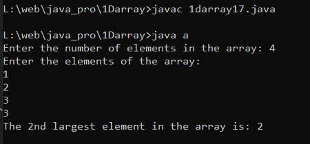

Program to Find 2nd Largest Number in an array
Code:-
import java.util.Scanner;
class a {
public static void main(String[] a) {
Scanner s = new Scanner(System.in);
System.out.print("Enter the number of elements in the array: ");
int n = s.nextInt();
int[] arr = new int[n];
System.out.println("Enter the elements of the array:");
for (int i = 0; i < n; i++) {
arr[i] = s.nextInt();
}
if (n < 2) {
System.out.println("There is no 2nd largest element in the array.");
} else {
int firstLargest = Integer.MIN_VALUE;
int secondLargest = Integer.MIN_VALUE;
for (int i = 0; i < n; i++) {
if (arr[i] > firstLargest) {
secondLargest = firstLargest;
firstLargest = arr[i];
} else if (arr[i] > secondLargest && arr[i] != firstLargest) {
secondLargest = arr[i];
}
}
if (secondLargest == Integer.MIN_VALUE) {
System.out.println("There is no 2nd largest element in the array.");
} else {
System.out.println("The 2nd largest element in the array is: " + secondLargest);
}
}
}
}
Output:-
